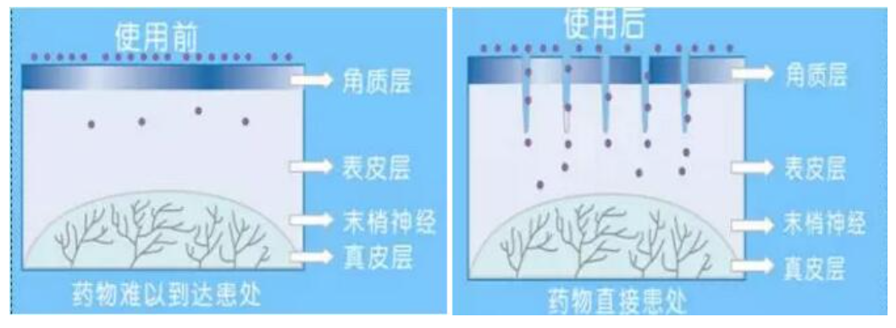

The Principle of the Nano-crystal Chip Branded by “Najing”
The skin functioned by Najing nano-crystal chips opening hundreds of channels in just a few square millimeters, gets more than 10 times in improving the ability of nutrient-absorbing, accelerating the nutrients permeating efficiently.

Najing nano-crystal chips, based on its notable characteristics, 1000 times smaller than the traditional micro-needle, get updated in micro-needle field. Our product, holding about 80nm in the touching point and 120μm height, can help open the tenacious cuticle channels of the skin, but not touching with the dermis and above, so there’s no pain and trauma, and the channels will be turned off about 20 minutes automatically. It’s very safe with no trace for all the process. Please believe.
When it comes, our product, Najing nano-crystal chips, had been gotten 11 invention patents respectively from American and China, won many awards in the world, thus it has been broadcasted by CCTV, French TV, WSJ and Forbes of USA. What is the Najing Brighten and Moisture ? It’s the newest technology of nano-crystal in the world, help open lots of micro-channels on the skin surface. It’s significantly fast and efficient for drug therapy and beauty-nursing by pointing import of the skincare.
What is Najing nano-crystal chip? It’s a new permeability-accelerating tool used for the skincare, which depends on the body skin structure and composed of one hundred needle-points.
The Advantages of Najing Brighten and Moisture Medical Skincare:
Individual Design from professional doctors:
Sole medical method related with skin-brighten and obstacle-restore, thus with the addition of the special micro-needle from Najing nano-crystal chips, it’s so convenient and safe without any detoxicators. Therefore, there’s no pain and no trauma.
Highly Absorption:
Because of more than 10 times more highly accelerating drug and moisture absorption than traditional scrawling, it has a good medical effect on lots of skin problems such as chloasma, dry-skin and so on.
Fast and safety:
It has no effects on your daily life, because it takes about 10-15 minutes for the whole medical nursing to ensure our skin keep normal after 20 minutes. When the Najing Brighten and Moisture comes, many loyal fans feel very happy. One of them, named Xiaohong, with patches on the face obviously, became whitening and patch-lighting by Najing medical nursing. Then she said that, there was a little feeling about needle punching without any marked pain and swell and it would be better after Najing nursing.